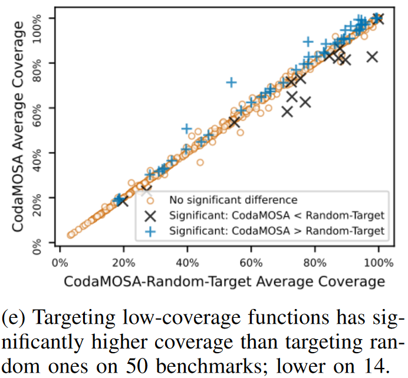

<!DOCTYPE html>
<html lang="en">
  <head>
    <meta charset="utf-8" />
    <meta name="viewport" content="width=device-width, initial-scale=1.0, maximum-scale=1.0, user-scalable=no" />

    <title>CODAMOSA</title>
    <link rel="shortcut icon" href="./favicon.ico" />
    <link rel="stylesheet" href="./dist/reset.css" />
    <link rel="stylesheet" href="./dist/reveal.css" />
    <link rel="stylesheet" href="./dist/theme/serif.css" id="theme" />
    <link rel="stylesheet" href="./css/highlight/base16/zenburn.css" />


  </head>
  <body>
    <div class="reveal">
      <div class="slides"><section  data-markdown><script type="text/template">
<style type="text/css"> 
h1,h2,h3,h4,p{ 
  text-align: left; 
}
h1.c,h2.c,h3.c{
  text-transform: capitalize;
}
h1.n,h2.n,h3.n,h4.n{
  text-transform: none;
}
h3.small{
  font-size: 55px;
}

img{
  text-align:left;
}
img.center{
  display: block; /* This is important for margin:auto to work */
  margin-left: 100px;
}
img.fl{
  float:left;
}
img.logo{
  margin-top: -30px;
  margin-bottom: -10px;
  max-width: 20%; 
  height: 60px; 
}
div.sma{
  font-size:35px;
  margin:40px 10px;
}
p.right{
  text-align:right;
  margin-right:100px;
}
p.main{
  font-size:28px;
}
h2.center,h3.center{
  text-align:center;
}
img.tem{
  border-radius: 8pt;
  height:700px;
}
#outter{
  display:flex;
  justify-content: space-around;
}
div.outter{
  display:flex;
  justify-content: center;
}
div.inner{
  display:flex;
  flex-direction: column;
  align-items:start;
  justify-content: space-evenly;
}
div.inner1{
  display:flex;
  flex-direction: column;
  align-items:start;
  justify-content: center;
}
div.shell{
  margin-top: -100px;
  margin-left:70px;
}
#ref{
  margin-left:100px;
  margin-top: -100px;
}
#cat{
  display:flex;
  flex-direction: column;
  justify-content:center;
}
span.green{
  color: #609966;
}
span.red{
  color: #EF5350;
}
span.yellow{
  color: #FFE17B;
}
span.blue{
  color: #5CD2E6;
}


</style> 

<div class="shell">
  <h2 class="c">CODAMOSA: Escaping Coverage Plateaus in Test Generation with Pre-trained Large Language Models</h2>
  <br/>
  <div style="text-align:left">
  <ul>
      <li>Authors:&emsp;Caroline Lemieux<sup>†</sup>, Jeevana Priya Inala, Shuvendu K. Lahiri, Siddhartha Sen</li>
      <li>Source:&emsp;ICSE'23</li>
  </ul>
  <br/><br/>
  </div><p class="right">汇报人 王小娅</p>
  <p class="right">汇报时间：12.28      </p>
</div>


</script></section><section  data-markdown><script type="text/template">

<div class="shell" style="margin-top:-100px">
  <h2>OUTLINE</h2><br/>
  <h3 class="n">Background : SBST</h3>
  <h3 class="n">Motivation : Stalls may be overcome by ...</h3>
  <h3 class="n">Technique : Targeted Generation & Deserializing</h3>
  <h3 class="n">Evaluation </h3>
  <h3 class="n">Summary </h3>
</div>

</script></section><section  data-markdown><script type="text/template">

<div class="shell" style="margin-top:-150px">
    
</div>

</script></section><section  data-markdown><script type="text/template">

<div class="shell" style="margin-top:-150px">
    
</div>

</script></section><section  data-markdown><script type="text/template">

<div class="shell">
<h1 class="c">PartⅠ. Background</h1>
</div>

</script></section><section  data-markdown><script type="text/template">

<!-- 左图右文 -->
<div class="shell">
  <h2>Search-Based Software Testing</h2>
  <div class="outter">
    
    <div class="inner1" style="margin-left:100px">
      <p>meta-heuristic optimization : evolutionary algorithms or simulated annealing</p>
      <p>(a) randomly generating a set of test cases to start from</p>
      <p>(b) repeatedly mutating the test cases to increase coverage of the program under test</p>
    </div>
  </div>  
</div>

</script></section><section  data-markdown><script type="text/template">

<div class="shell">
<h1 class="c">PartⅡ. Motivation</h1>
</div>

</script></section><section  data-markdown><script type="text/template">

<!-- 左图右图 -->
<div class="shell">
  <h3>The code fragment of the <em>packages</em> module of the <em>flutils</em> project</h3>
  <br>
  <div class="outter">
    
    
  </div>  
</div>

</script></section><section  data-markdown><script type="text/template">

<div class="shell">
<h1 class="c">PartⅢ. Technique</h1>
</div>

</script></section><section  data-markdown><script type="text/template">

<!-- 左图右图 -->
<div class="shell">
  <h3>High-Level Walkthrough</h3>
  <div class="outter">
    
    
  </div>  
</div>

</script></section><section  data-markdown><script type="text/template">

<!-- 左图右文 -->
<div class="shell">
  <h3>Targeted Generation</h3>
  <div class="outter">
    
    <div class="inner1" style="margin-left:100px">
      <p>1. Samples a callable to target with probability inversely proportional to the coverage of each callable</p>
      <p>2. Generate a prompt to target this particular callable</p>
      <p>3. Query model and deserialize model’s output into a test case</p>
    </div>
  </div>  
</div>

</script></section><section  data-markdown><script type="text/template">

<!-- 纵向文字 -->

<div class="shell" style="margin-top:-140px">
  <div class="inner" >
    <h3 class="n">Deserializing Generated Test Cases</h3>
    <p>1. Rewriting Codex Generations</p>
    <p>2. Partial Parsing</p>

```python
x = 3 
y = UNKNOWN_FUNCTION(x) 
z = foo(y) 
w = bar(x)
```
    
  <p>3. Callables Expansion</p>
  <p>4. Uninterpreted Statements</p>
  
  </div>
</div>

</script></section><section  data-markdown><script type="text/template">

<div class="shell">
<h1 class="c">PartⅣ. Experiments</h1>
</div>

</script></section><section  data-markdown><script type="text/template">

<!-- 左图右文 -->
<div class="shell">
  <h3>Benchmark Collection</h3>
  <div class="outter">
    
    <div class="inner1" style="margin-left:200px">
      <p>1. Projects Source : <em>Pynguin & BugsInPy</em></p>
      <p>2. Get dependencies and modules : <em>pipreqs & setuptools.find_packages</em></p>
      <p>3. Filter : By a preliminary test</p>
      <p>4. Down-sample : modules sharing the same parent module</p>
    </div>
  </div>  
</div>

</script></section><section  data-markdown><script type="text/template">

<div class="shell">
<!-- 4个RQs, 分上下左右四块 -->
  <div class="outter">
    <div class="inner" style="margin-right:50px">
      <div>
        <h4 class="n">RQ1 - How does CODAMOSA compare to our baselines on our benchmark set?</h4>
      </div>
      </br>
      <div>
        <h4 class="n">RQ2 - How do our design decisions <em>(uninterpreted statements, Codex hyper-parameters, low-coverage targeting, prompting)</em> affect test effectiveness?</h4>
      </div>
    </div>
    <div class="inner">
      <div>
        <h4 class="n">RQ3 - Why, qualitatively, does CODAMOSA achieve different coverage results than MOSA?</h4>
      </div>
      </br>
      <div>
        <h4 class="n">RQ4 - Are Codex generations copied from out-of-prompt files in the module under test’s codebase?</h4>
      </div>     
    </div>
  </div>
</div>

</script></section><section  data-markdown><script type="text/template">

<!-- 左图右图 -->
<div class="shell">
  <h3>RQ1</h3>
  <div class="outter">
    
    
  </div>
  <p>A Mann-Whitney U-Test to compare the significance of coverage(line + branch) differences</p>
  <p>It is initially faster to generate test cases using random test generation than by querying Codex</p>
  <p>The increases compared to MOSA get larger over time while those over CODEXONLY decrease over time</p>
</div>

</script></section><section  data-markdown><script type="text/template">

<!-- 左图右图 -->
<div class="shell">
  <h3>RQ1</h3>
  <div class="outter" style="margin-top:-40px">
    
    
  </div>
  <p>1. The crosses above the x = y line means CODAMOSA achieves a higher magnitude of coverage increases over baselines</p>
  <p>2. Meaningful combination v.s. just union</p>
  <p>3. These coverage increases do not seem to come at the cost of test suite bloat</p>
</div>

</script></section><section  data-markdown><script type="text/template">

<!-- 左图右文 -->
<div class="shell">
  <h3>RQ2-Uninterpreted Statements</h3>
  <div class="outter">
    
    <div class="inner1" style="margin-left:200px">
      <p>1. The use of uninterpreted statements results in significant coverage <span class="green">increases</span> on 57 benchmarks, and significant coverage <span  class="red">decreases</span> on 8 benchmarks</p>
      <p>2. Uninterpreted statements can exercise function behaviors that can only be exercised by complex constructs, e.g., iteration</p>
      <p>3. Uninterpreted statements may also lead to the inclusion of useless statements in test cases</p>
    </div>
  </div>  
</div>

</script></section><section  data-markdown><script type="text/template">

<!-- 左图右文 -->
<div class="shell">
  <h3>RQ2-Temperature</h3>
  <div class="outter">
    
    <div class="inner1" style="margin-left:200px">
      <p>1. With a temperature of 0, Codex always returns the most likely next token</p>
      <p>2. CODAMOSA(temperature 0.8 by default) had significantly higher coverage than CODAMOSA-TEMP-0.2 on 113 benchmarks, and significantly lower coverage on 9 benchmarks</p>
    </div>
  </div>  
</div>

</script></section><section  data-markdown><script type="text/template">

<!-- 左图右文 -->
<div class="shell">
  <h3>RQ2-Targeting Low-Coverage Functions</h3>
  <div class="outter">
    
    <div class="inner1" style="margin-left:200px">
      <p>1. On 50 benchmarks, CODAMOSA has significantly higher coverage than CODAMOSA-RANDOM, but CODAMOSA-RANDOM has significantly higher coverage on 14 benchmarks</p>
      <p>2. Compared to the use of uninterpreted statements or high temperature, targeting low-coverage callables does not yield large magnitudes of coverage increases</p>
      <p>3. CODAMOSA-RANDOM could perform better than CODAMOSA if a low-coverage function’s coverage cannot be increased</p>
    </div>
  </div>  
</div>

</script></section><section  data-markdown><script type="text/template">

<!-- 左图右文 -->
<div class="shell">
  <h3>RQ2-Prompting</h3>
  <div class="outter">
    
    <div class="inner1" style="margin-left:200px">
      <p>1. A natural question is whether prompting Codex with an example of a well-formatted test case could improve these results.</p>
      <p>2. On 49 benchmarks, CODAMOSA had significantly higher coverage than CODAMOSA-TESTCASEPROMPT, but CODAMOSA-RANDOM has significantly higher coverage on 24 benchmarks</p>
    </div>
  </div>  
</div>

</script></section><section  data-markdown><script type="text/template">

<!-- 纵向文字 -->

<div class="shell" style="margin-top:-140px">
  <div class="inner" >
    <h3 class="n">RQ3-Case Studies</h3>
    <p>1. Reasons for Coverage Improvement</p>
    <ul>
      <li>Special strings</li>
      <li>Backup callables</li>
      <li>Uninterpreted statements</li>
    </ul>
    <p>2. Reasons for Coverage Decreases</p>
    <ul>
      <li>Wrong signature</li>
      <li>Unparseable constructs</li>
      <li>Token limitations</li>
    </ul>
  </div>
</div>

</script></section><section  data-markdown><script type="text/template">

<!-- 左图右文 -->
<div class="shell">
  <h3>RQ4</h3>
  <div class="outter">
    
    <div class="inner1" style="margin-left:200px">
      <p>1. Each module to test functions present in the module’s source repository but not in the module’s definition file</p>
      <p>2. Use maximum similarity -- metric for code plagiarism detection</p>
      <p>3. The majority of generated test cases have similarity ≤ 0.4</p>
      <p>4. On benchmarks likely outside of Codex’s training set, CODAMOSA performed well</p>
    </div>
  </div>  
</div>

</script></section><section  data-markdown><script type="text/template">


<div class="shell">
<h1 class="c">PartⅤ. Summary</h1>
</div>

</script></section><section  data-markdown><script type="text/template">


<div class="shell">

  <div id="inner">
    <h2 class="n">Strengths</h2>
    <p>1. A detailed analysis was conducted on every factor influencing the experimental results.</p>
    <p>2. The argumented deserializing.</p>
    <h2 class="n">Weaknesses</h2>
    <p>1. Baselines are not state-of-the-art (SOTA) approaches.</p>
    <p>2. The metric is very singular.</p>
    <p></p>
  </div>

</div>

</script></section><section  data-markdown><script type="text/template">

<div class="shell">

  <div id="inner">
    <h2 class="n">Insights</h2><br>
    <p>1. Consider the extreme coverage plateaus: there is no obvious growth from the beginning.</p>
    <p>2. No need to start from scratch, improve by targeting weaknesses in mature open-source methods.(like Call Me Maybe<em>(ASE'22)</em>)</p>
  </div>
  
</div>

</script></section><section  data-markdown><script type="text/template">

<div class="shell">
<h2 class="c">Thank you for watching</h2>
</div>
</script></section></div>
    </div>

    <script src="./dist/reveal.js"></script>

    <script src="./plugin/markdown/markdown.js"></script>
    <script src="./plugin/highlight/highlight.js"></script>
    <script src="./plugin/zoom/zoom.js"></script>
    <script src="./plugin/notes/notes.js"></script>
    <script src="./plugin/math/math.js"></script>
    <script>
      function extend() {
        var target = {};
        for (var i = 0; i < arguments.length; i++) {
          var source = arguments[i];
          for (var key in source) {
            if (source.hasOwnProperty(key)) {
              target[key] = source[key];
            }
          }
        }
        return target;
      }

      // default options to init reveal.js
      var defaultOptions = {
        controls: true,
        progress: true,
        history: true,
        center: true,
        transition: 'default', // none/fade/slide/convex/concave/zoom
        slideNumber: true,
        plugins: [
          RevealMarkdown,
          RevealHighlight,
          RevealZoom,
          RevealNotes,
          RevealMath
        ]
      };

      // options from URL query string
      var queryOptions = Reveal().getQueryHash() || {};

      var options = extend(defaultOptions, {"width":1780,"height":620,"margin":0.04,"progress":true,"transition":"none","slideNumber":true}, queryOptions);
    </script>


    <script>
      Reveal.initialize(options);
    </script>
  </body>
</html>
